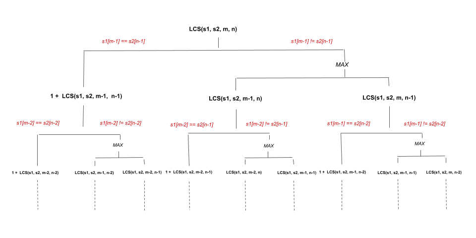

We are given a string s. We can step we can insert any character at any index of the string.
Our task is to return the minimum number of steps to make s palindrome.
If you are new to Dynamic Programming, please see our Leetcode Explore Card for more information on it!
As our task is to insert minimum number of additional characters to s to make it a palindrome, we would
want to figure out the longest palindromic subsequence that we can make from the characters in s.
Characters that cannot be included in the longest palindromic subsequence must be adjusted by adding additional
characters at required indices to form the entire string palindrome.
The answer of the problem would be the length of s minus the length of the longest palindromic
subsequence in s.
There are several methods for determining the length of the longest palindromic subsequence in a string. The length of the longest common subsequence (LCS) in the given string and its reverse string is one of the most commonly used techniques. Here, we'll go over some of the approaches that make use of LCS.
You can see some approaches that do not use LCS in this editoral of the longest palindromic subsequence problem.
We will use recursion to find the length of the longest common subsequence in this approach.
Let's take two strings, s1 which is equal to s and s2 which is the reverse of
s. We want to find the longest common subsequence between these two strings.
If the last characters of the substrings under consideration are the same, the last character will be considered in
the final common subsequence. As a result, we add 1 and recursively calculate the length of the longest
common subsequence in substrings formed by removing the last character from both strings.
If the last characters aren't the same, we search for the LCS recursively by removing the last character from the first substring while keeping the second substring as is. We also recurse by leaving the first substring as is and removing the last character from the second. We choose the maximum of these because we want the longest common subsequence.
To perform this recursion, we use two variables, m and n, where m denotes the
first m characters from s1 and n denotes the first n characters
from s2 that are being considered in the current recursion call. As a result, the recursive relation
can be written as follows:
- If
s1[m - 1] == s2[n - 1], i.e., the last characters match, performanswer = 1 + LCS(s1, s2, m - 1, n - 1).- Else, perform
answer = max(LCS(s1, s2, m, n - 1), LCS(s1, s2, m - 1, n).
where LCS(string s1, string s2, int i, int j) is a recursive method that returns the longest common
subsequence of the substrings taking the first i characters of s1 and the first
j characters of s2 into account. The LCS of s1 and s2 is LCS(s1,
s2, m, n), where m is the length of s1 and n is the length of
s2.
The recursion tree of the above relation for s1 and s2 would look something like this:

Several subproblems, such as LCS(s1, s2, m - 2, n - 1), LCS(s1, s2, m - 1, n - 1), etc.,
are solved twice in the partial recursion tree shown above. If we draw the entire recursion tree, we can see that
there are many subproblems that are solved repeatedly.
To avoid this issue, we store the solution of the subproblem in a 2D array when it is solved. When we encounter the same subproblem again, we simply refer to the array. This is called memoization.
The answer of the problem would be n - LCS(s, sReverse, n, n) where n is length of
s and sReverse is the reverse string of s.
n and initialize it to the size of s.sReverse and set it to the reverse of s.memo having n + 1 rows and n + 1 columns where
memo[i][j] contains the length of the longest common subsequence considering the first
i characters of s and the first j characters of sReverse. We
initialize the array to -1.
n - lcs(s, sReverse, n, n, memo) where lcs is a recursive method with four
parameters: the first string s1, the second string s2, the length of the substring
from the start of s1 under consideration, the length of the substring from the start of
s2 under consideration and memo. It returns the length of the longest common
subsequence in the substrings of s1 and s2 under consideration. We perform the
following in this method:
m == 0 || n == 0, it indicates one of the two substrings under consideration is empty,
so we return 0.
memo[m][n] != -1, it indicates that we have already solved this subproblem, so we return
memo[m][n].
1 and look for the length of the longest common subsequence
by ignoring the last character of both the substrings under consideration. We return memo[i][j] =
1 + lcs(s1, s2, m - 1, n - 1, memo).
memo[i][j] = max(lcs(s1, s2, m - 1, n, memo), lcs(s1, s2, m, n - 1,
memo)).
Java
class Solution {
private int lcs(String s1, String s2, int m, int n, int[][] memo) {
if (m == 0 || n == 0) {
return 0;
}
if (memo[m][n] != -1) {
return memo[m][n];
}
if (s1.charAt(m - 1) == s2.charAt(n - 1)) {
return memo[m][n] = 1 + lcs(s1, s2, m - 1, n - 1, memo);
}
return memo[m][n] = Math.max(lcs(s1, s2, m - 1, n, memo), lcs(s1, s2, m, n - 1, memo));
}
public int minInsertions(String s) {
int n = s.length();
String sReverse = new StringBuilder(s).reverse().toString();
int[][] memo = new int[n + 1][n + 1];
for (int i = 0; i <= n; i++) {
for (int j = 0; j <= n; j++) {
memo[i][j] = -1;
}
}
return n - lcs(s, sReverse, n, n, memo);
}
}
C++
class Solution {
public:
int lcs(string& s1, string& s2, int m, int n, vector>& memo) {
if (m == 0 || n == 0) {
return 0;
}
if (memo[m][n] != -1) {
return memo[m][n];
}
if (s1[m - 1] == s2[n - 1]) {
return memo[m][n] = 1 + lcs(s1, s2, m - 1, n - 1, memo);
}
return memo[m][n] = max(lcs(s1, s2, m - 1, n, memo), lcs(s1, s2, m, n - 1, memo));
}
int minInsertions(string s) {
int n = s.length();
string sReverse = s;
reverse(sReverse.begin(), sReverse.end());
vector> memo(n + 1, vector(n + 1));
for (int i = 0; i <= n; i++) {
for (int j = 0; j <= n; j++) {
memo[i][j] = -1;
}
}
return n - lcs(s, sReverse, n, n, memo);
}
};
Here, nn
is the length of s.
Time complexity: O(n2)O(n^2)
memo array takes O(n2)O(n^2) time.
Space complexity: O(n2)O(n^2)
memo array consumes O(n2)O(n^2) space.
s[m - 1] != s[n - 1]). The recursion stack would only have one call out of the
two branches. The height of such a tree will be O(n)O(n)
because at each level we are decrementing the length of the strings under consideration by
1. As a result, the recursion tree that will be formed will have O(n)O(n)
height. Hence, the recursion stack will have a maximum of O(n)O(n)
elements.
We used memoization in the preceding approach to store the answers to subproblems in order to solve a larger problem. We can also use a bottom-up approach to solve such problems without using recursion. We build answers to subproblems iteratively first, then use them to build answers to larger problems.
Similar to the above approach, we create a reverse string of s called sReverse and pass
both strings to the lcs method as s1 and s2 respectively.
In this approach, we modify the lcs method to make it iterative. In the lcs method, we
create a 2D-array dp, where dp[i][j] contains the length of the longest common subsequence
considering the first i characters of s1 and the first j characters of s2.
Our answer would be dp[m][n], where m is the length of s1 and n
is the length of s2. The state transition would be as follows:
- If
s[i - 1] == s[j - 1], performdp[i][j] = 1 + dp[i - 1][j - 1].- Otherwise, perform
dp[i][j] = max(dp[i - 1][j], dp[i][j - 1].
To fill the dp array we will iterate using two loops with the outer loop running from i = 0
to i = m incrementing i by 1 after each iteration and an inner loop running
from j = 0 to j = m. The length of the longest common sequence would be
dp[m][n].
The answer to the problem would n - lcs(s, sReverse, n, n) where n is the length of
s.
n and initialize it to the size of s.sReverse and set it to the reverse of s.n - lcs(s, sReverse, n, n) where lcs is a recursive method with four
parameters: the first string s1, the second string s2, the length of s1
and the length of s2. It returns the length of the longest common subsequence in s1
and s2. We perform the following in this method:
dp having n + 1 rows and n + 1 columns
where dp[i][j] will contain the length of the longest common subsequence considering the
first i characters of s1 and the first j characters of
s2.
i = 0 to i = m
incrementing i by 1 after each iteration. The inner loop runs from j =
0 to j = n.
i == 0 || j == 0, it indicates one of the two substrings under consideration is empty,
so we mark dp[i][j] = 0.
s1[i - 1] == s2[j
- 1], the last character has to be included. As a result, we add 1 to the length of
the longest common subsequence by ignoring the last character of both the substrings under
consideration. We perform dp[i][j] = 1 + dp[i - 1][j - 1].
dp[i][j] = max(dp[i - 1][j], dp[i][j - 1]).
dp[m][n].
Java
class Solution {
private int lcs(String s1, String s2, int m, int n) {
int[][] dp = new int[m + 1][n + 1];
for (int i = 0; i <= m; i++) {
for (int j = 0; j <= n; j++) {
if (i == 0 || j == 0) {
// One of the two strings is empty.
dp[i][j] = 0;
} else if (s1.charAt(i - 1) == s2.charAt(j - 1)) {
dp[i][j] = 1 + dp[i - 1][j - 1];
} else {
dp[i][j] = Math.max(dp[i - 1][j], dp[i][j - 1]);
}
}
}
return dp[m][n];
}
public int minInsertions(String s) {
int n = s.length();
String sReverse = new StringBuilder(s).reverse().toString();
return n - lcs(s, sReverse, n, n);
}
}
C++
class Solution {
public:
int lcs(string& s1, string& s2, int m, int n) {
vector> dp(n + 1, vector(n + 1));
for (int i = 0; i <= m; i++) {
for (int j = 0; j <= n; j++) {
if (i == 0 || j == 0) {
// One of the two strings is empty.
dp[i][j] = 0;
} else if (s1[i - 1] == s2[j - 1]) {
dp[i][j] = 1 + dp[i - 1][j - 1];
} else {
dp[i][j] = max(dp[i - 1][j], dp[i][j - 1]);
}
}
}
return dp[m][n];
}
int minInsertions(string s) {
int n = s.length();
string sReverse = s;
reverse(sReverse.begin(), sReverse.end());
return n - lcs(s, sReverse, n, n);
}
};
Here, nn
is the length of s.
Time complexity: O(n2)O(n^2)
dp array takes O(n2)O(n^2) time.
dp array which takes O(n2)O(n^2) time.
Space complexity: O(n2)O(n^2)
dp array consumes O(n2)O(n^2) space.
We have seen that the state transitions are:
- If
s[i - 1] == s[j - 1], performdp[i][j] = 1 + dp[i - 1][j - 1].- Otherwise, perform
dp[i][j] = max(dp[i - 1][j], dp[i][j - 1].
If we examine this transition closely, we can see that in each iteration of the outer loop, we only need values from
all columns in the previous and current rows. As a result, we do not need to store all rows in our dp
matrix. We can just store two rows at a time and use them. To fill row i in the dp matrix,
we need the values from row i - 1 (dp[i - 1][j - 1], dp[i - 1][j]) and
previously computed value in the ithi^{th}
row itself (dp[i][j - 1]). Values in rows i - 2, i - 3, and so on are no
longer needed.
Our task is complete if we can store the values of the previous iteration, i.e., for row i - 1 after
each iteration of the outer loop.
We can solve this by using two 1D arrays. In the lcs method used in the previous approach, we create two
1D arrays of size n + 1, dp and dpPrev, where n is the size of
s2.
We repeat the previous approach by running two loops. The outer loop runs from i = 0 to i =
m and the inner loop runs from j = 0 to j = n.
Now, when we iterate using the two loops, dp[j] would store the length of longest common subsequence of
the substring considering the first i characters of s1 and the first j
characters of s2. It is similar to what dp[i][j] stored in previous approach.
The other array dpPrev is important to understand. It helps us by remembering the previous state that we
completed previously. dpPrev[j] would store the length of the longest common subsequence of the
substring considering the first i - 1 characters of s1 and the first j
characters of s2. It is analogous to dp[i - 1][j] in the previous approach.
Because dpPrev stores the length of the longest common subsequence of the substring considering the
first i - 1 characters of s1 and the first j characters of s2,
we must copy the elements of dp to dpPrev after each outer loop iteration (or after every
inner loop completion) to prepare for the next iteration. After we copy dp to dpPrev, for
the next iteration which considers a substring of s1 having first i + 1 characters, dpPrev
will hold values for a substring of s1 having first i characters and all possible
substrings (from the start) of s2, which is exactly what we want.
n and initialize it to the size of s.sReverse and set it to the reverse of s.n - lcs(s, sReverse, n, n) where lcs is a recursive method with four
parameters: the first string s1, the second string s2, the length of s1
and the length of s2. It returns the length of the longest common subsequence in s1
and s2. We perform the following in this method:
dp and dpPrev of size n + 1.i = 0 to i = m
incrementing i by 1 after each iteration. The inner loop runs from j =
0 to j = n.
i == 0 || j == 0, it indicates one of the two substrings under consideration is empty,
so we mark dp[j] = 0.
s1[i - 1] == s2[j
- 1], the last character has to be included. As a result, we add 1 to the length of
the longest common subsequence by ignoring the last character of both the substrings under
consideration. We perform dp[j] = 1 + dpPrev[j - 1]. Note that we have already computed the
answers considering the first i - 1 characters of s1 and all possible
substrings (from the start) of s2. We have it in dpPrev and used it.
dp[j] = max(dpPrev[j], dp[j - 1]).
dp to dpPrev.dp[n] (or dpPrev[n] as both
are similar).
Java
class Solution {
private int lcs(String s1, String s2, int m, int n) {
int[] dp = new int[n + 1];
int[] dpPrev = new int[n + 1];
for (int i = 0; i <= m; i++) {
for (int j = 0; j <= n; j++) {
if (i == 0 || j == 0) {
// One of the two strings is empty.
dp[j] = 0;
} else if (s1.charAt(i - 1) == s2.charAt(j - 1)) {
dp[j] = 1 + dpPrev[j - 1];
} else {
dp[j] = Math.max(dpPrev[j], dp[j - 1]);
}
}
dpPrev = dp.clone();
}
return dp[n];
}
public int minInsertions(String s) {
int n = s.length();
String sReverse = new StringBuilder(s).reverse().toString();
return n - lcs(s, sReverse, n, n);
}
}
C++
class Solution {
public:
int lcs(string& s1, string& s2, int m, int n) {
vector dp(n + 1), dpPrev(n + 1);
for (int i = 0; i <= m; i++) {
for (int j = 0; j <= n; j++) {
if (i == 0 || j == 0) {
// One of the two strings is empty.
dp[j] = 0;
} else if (s1[i - 1] == s2[j - 1]) {
dp[j] = 1 + dpPrev[j - 1];
} else {
dp[j] = max(dpPrev[j], dp[j - 1]);
}
}
dpPrev = dp;
}
return dp[n];
}
int minInsertions(string s) {
int n = s.length();
string sReverse = s;
reverse(sReverse.begin(), sReverse.end());
return n - lcs(s, sReverse, n, n);
}
};
Here, nn
is the length of s.
Time complexity: O(n2)O(n^2)
dp and dpPrev arrays take O(n)O(n) time.
Space complexity: O(n)O(n)
dp and dpPrev arrays take O(n)O(n) space
each.